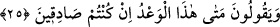
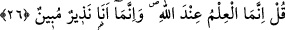

toplanacaksınız.” Bu toplanmanız cismânî olacaktır. Bir başka ifâdeyle O’nun
huzûrunda toplanıp hesaba çekilmek ve amellerinizin karşılığını görmek üzere
dirileceksiniz. Sizler berzah âlemine teker teker giderken, kıyâmet günü bir defada ve
aynı anda diriltileceksiniz. Şu hâlde işlerinizi bu prensip üzere kurunuz. Allah Teâlâ
âyet-i kerîmeyi “ancak O’nun huzûruna gelip toplanacaksınız” ifâdesiyle bitiriyor ve
zikredilen bütün delillerin bu yargının isbâtı için beyân ediyor.
25. «Doğru sözlü iseniz (söyleyin), bu tehdid hani ne zaman (gerçekleşecek)?»
derler.
Onlar aşırı inad ve böbürlenmelerinin bir sonucu olarak ya da âyetin devamının
gösterdiği üzere alay olsun diye “doğru sözlü iseniz (söyleyin), bu tehdid” bu vaad
edilen mahşerde haşrolma “hani ne zaman (gerçekleşecek)? derler.” Burada vaad
edilen haşr “ancak onun huzûruna gelip toplanacaksınız” ifâdesiyle belirtilen haşırdır.
Âyette yer alan “vaad” kelimesi, “vaad edilen” anlamınadır. Burada işâret olunan ve
vaad olunan ise haşr yâni Allah Teâlâ’nın huzûrunda toplanmaktır. Bâzı âlimlere göre
vaad edilen bu şey, kâfirlerin yere batırıverilmekle ve üzerlerine taş yağdırılmakla
korkutulmalarıdır. Âyette gelecek zaman lâfzının seçilmiş olması ya maksadın kâfirlerin
bu sözü ilerde söyleyeceklerini beyân olduğundan böyledir. Ya da onların, hem
peygambere ve hem de müminlere hitâben “doğru sözlü iseniz” şeklinde hitâb
etmelerinden dolayıdır. Çünkü müminler vaad noktasında ve bu vaadi ihtivâ eden
âyetlerin okunması hususunda Peygamber Efendimiz’e ortak idiler. “Eğer” kelimesi ile
ifâde edilen şart cümlesinin cevabı mahzuftur. Bizim takdir etmemiz gerekirse şöyle
takdir etmek mümkündür: “Şâyet siz kıyâmetin geleceği ve Allah’ın huzûrunda
toplanmanın gerçekleşeceğine dâir vermiş olduğunuz haberlerinizde doğru sözlü iseniz
o zaman bunun vaktini beyân ediniz.”
26. De ki: O bilgi, ancak Allah’a mahsustur. Ben ise sâdece apaçık bir uyarıcıyım.
Ey yaratıkların en âlimi “De ki: O bilgi,” yâni onun vaktinin bilgisi “ancak” her şeyi
takdir eden, her şeyi planlayıp ayarlayan “Allah’a mahsustur.” Buna Allah’tan başka
hiç kimse muttali olamaz. “Ben ise sâdece apaçık bir uyarıcıyım.” Bildiğiniz ve
konuştuğunuz dilinizle size hitâb eden apaçık bir korkutucuyum. Hakkı ortaya çıkaran,
vâkıayı apaçık gözlerinizin önüne seren bir uyarıcıyım. Size vaad edilen şeylerin kesin
olarak gerçekleşeceği noktasında sizi uyaranım. Vaad edilen bu şeylerin ne zaman